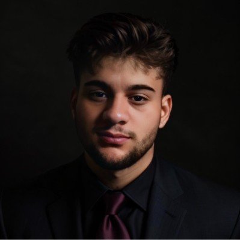

Fahad Elia
United States • felia@oakland.edu
Aspiring Software Engineer | IT Specialist | Problem Solver
Summary
With a lifelong immersion in computers, where I've demonstrated proficiency in efficient use and management, I am a newcomer to computer engineering eager to learn various programming languages. Additionally, my skills as a fast typer and adept problem-solver on computers underscore my readiness to excel in the dynamic realm of computer technology.
Experience
IT
- Provided technical support to office and production floor employees, troubleshooting hardware, software, and network issues.
- Assisted with Active Directory and Microsoft 365 management.
- Deployed new hardware and maintained IT asset inventory.
- Supported cybersecurity initiatives and user awareness programs.
Pharmacy Technician
- Handled inventory, labeling, and storage of medications.
- Assisted patients, processed payments, and managed data entry.
CEO
- Directed IT and administrative operations, customer support, and cybersecurity.
- Trained and managed staff while maintaining high productivity and service standards.
Education
Computer Science — Software Engineering (Present)
High School Diploma